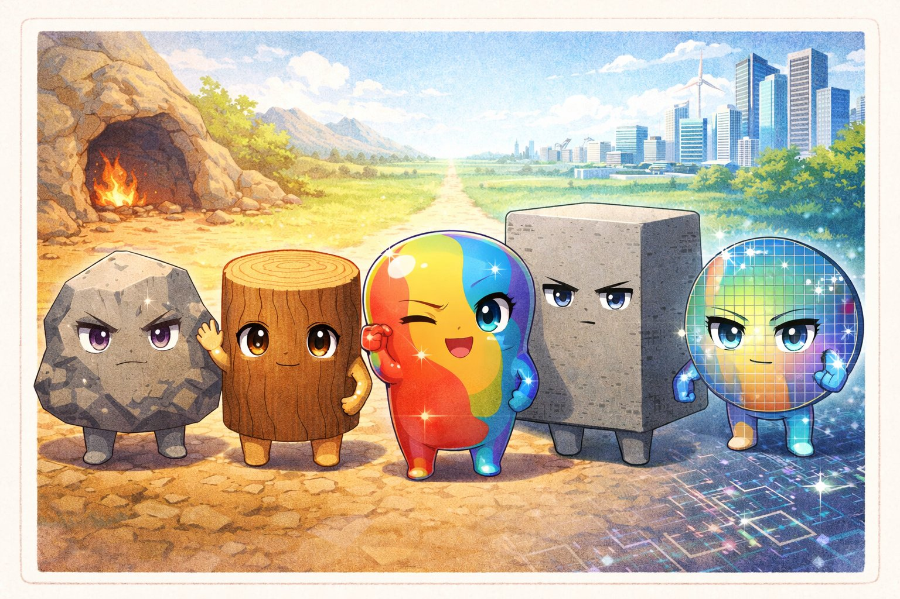
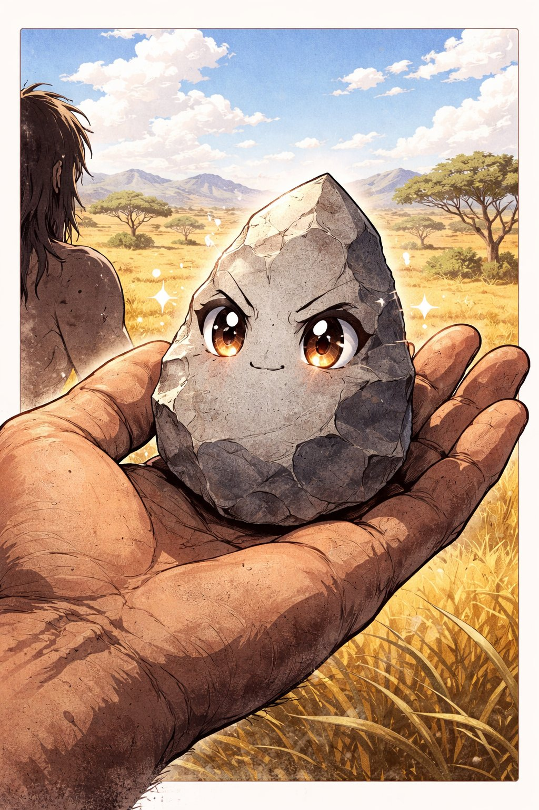
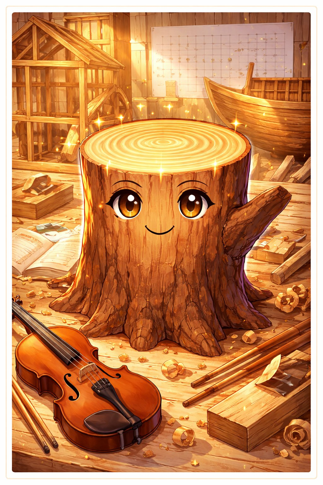
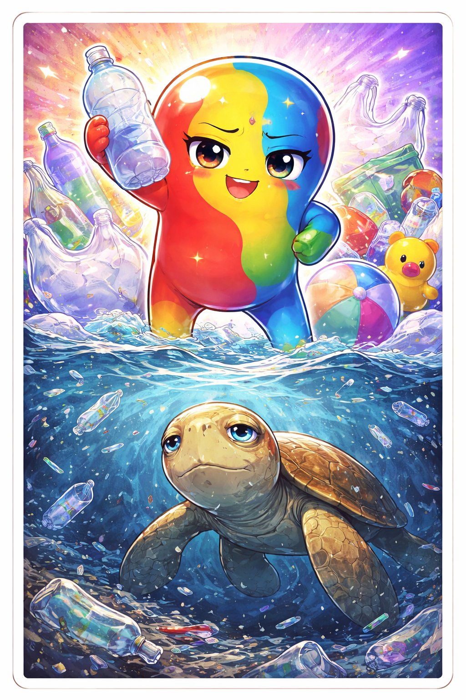
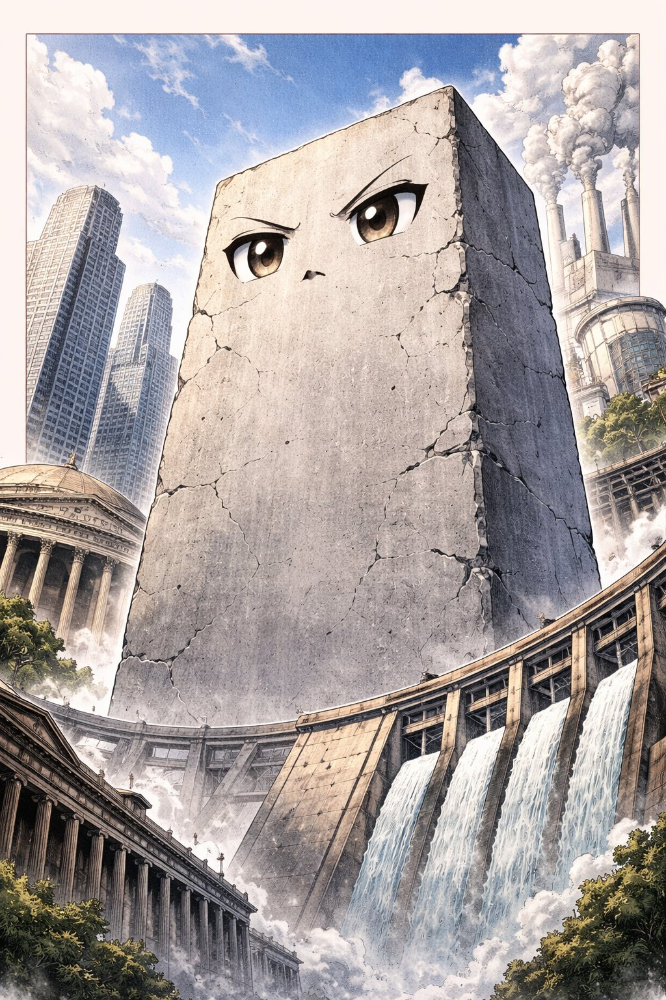
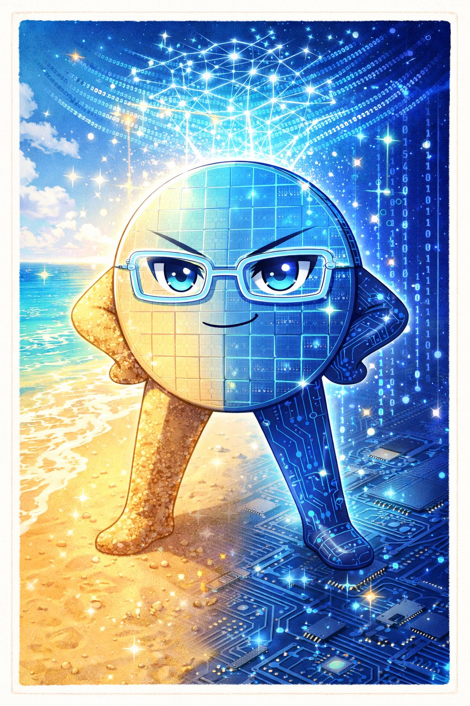

にんげんは「てで さわる」いきもの。
つかみ、けずり、まぜ、やく。
てに した もの —— 素材 —— が、にんげんの じだいを きめてきた。
いしき（石器時代）、せいどうき（青銅器時代）、てっき（鉄器時代）……
歴史の なまえは、ぜんぶ 素材の なまえ だ。

イシちゃんは 石。にんげんが つくった いちばん さいしょの 道具 の 素材。
オルドワン石器（250万年前）— ただ 石を わっただけ。
でも「自然の ものを 加工して 道具に する」という アイデアは、ここから。
石器 → 青銅器 → 鉄器。素材の 進化は 文明の 進化そのもの。

キノさんは 木。にんげんの 歴史で いちばん ながく つかわれてきた 素材。
家、船、橋、紙、薪、家具、楽器、箸……
しかも 木は 再生可能。うえれば また はえる。
でも にんげんは 木を きりすぎた。世界の 森林は 1万年で 半分 になった。

プラ太は プラスチック。1907年に ベークライトが つくられて 約120年。
安く、軽く、丈夫で、自由な 形に なる。「夢の 素材」だった。
でも 分解されるまでに 数百年〜数千年 かかる。
毎年 800万トン が 海に ながれこんでいる。
2050年には 海の プラスチックの 重さが、魚の 重さを こえるかもしれない。

コンクリは コンクリート。水の次に 地球で 多く 使われている 人工物。
年間 約300億トン 生産。ひとりあたり 約4トン。
古代ローマの パンテオンは 2000年前の コンクリで いまも たっている。
でも コンクリの 製造は 全CO₂排出の 約8% を占める。
文明の 骨格であり、環境問題の 主犯のひとり。

シリコ先輩は シリコン（ケイ素）。地球の 地殻で 2番目に おおい 元素。
砂の おもな 成分。でも これを 超高純度に 精製して チップにすると、
コンピュータの 頭脳 になる。
1つの チップに 数百億個の トランジスタ。スマホ、PC、AI、インターネット——
いまの 情報社会は ぜんぶ シリコの うえに たっている。
ネット先輩（インターネット）の からだを つくったのは、シリコ先輩。
イシちゃんに おそわったこと — 「はじまりは、いつも シンプル」。
キノさんに おそわったこと — 「いちばん ながい つきあいは、いちばん やさしい そざい」。
プラ太に おそわったこと — 「べんりは、つけを のこす」。
コンクリに おそわったこと — 「ぼくたちは、なにの うえに たっているか」。
シリコ先輩に おそわったこと — 「すなが かんがえる じだいが きた」。
① 制約が創造を生む — 石しかなかったから 石器をつくった。制約がなければ 発明はない。
② 代償 — どんな素材にも コストがある。べんりさの 裏を みること。
③ 循環 — つかったら もどす。もどせないなら つかいかたを かえる。